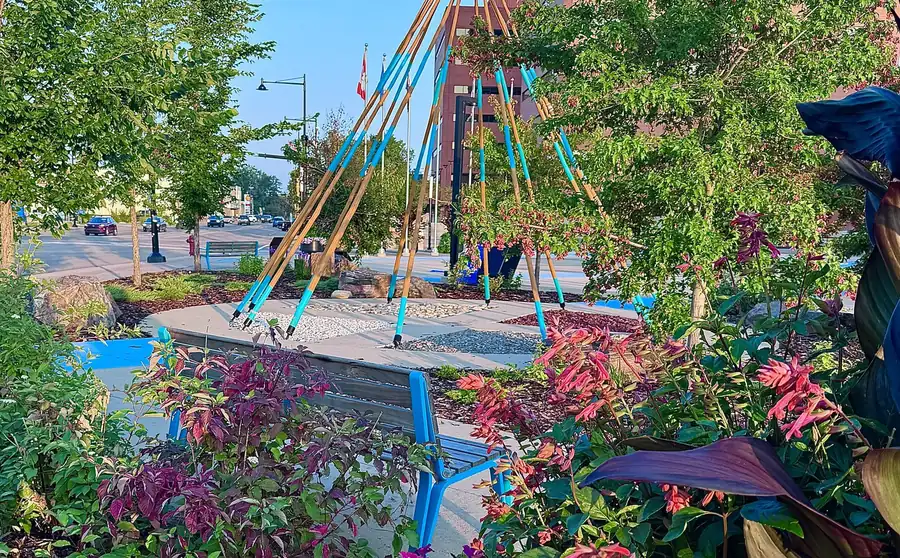

v54 · Nov 21
← Beyond the Highway

PLACES OF WOOD BUFFALO
FORT McMURRAY

Edit Places
PIN-protected — changes made here go live immediately.
Edits are saved on this device. Add or change a place, then Export backup to move it to another computer or send it to your developer.
Category banner images
Pick a category, choose a photo, tap Save banner. It is cropped wide and goes live for everyone.
Places Directory
★ Showing Top Picks & Featured businesses only
Category
Loading places...
Powered by Ask Mac and LogicLinksAI, the AI division of TravTriv Inc.